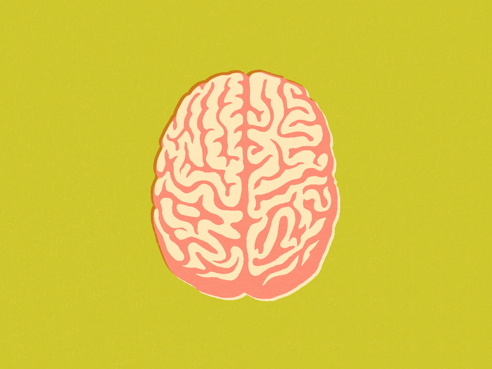
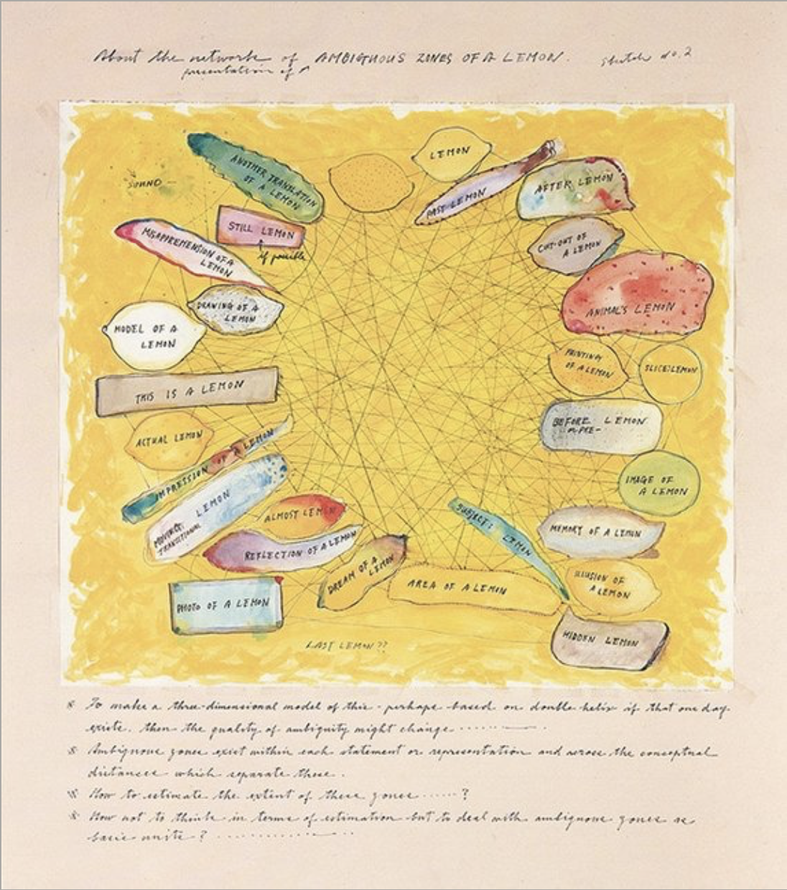
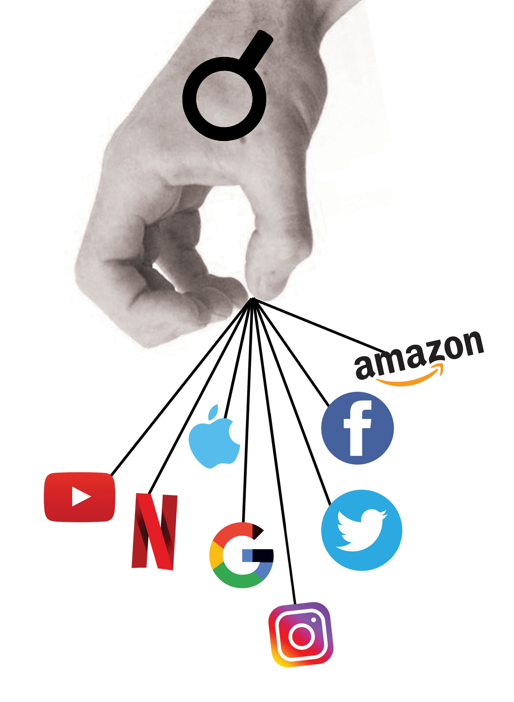
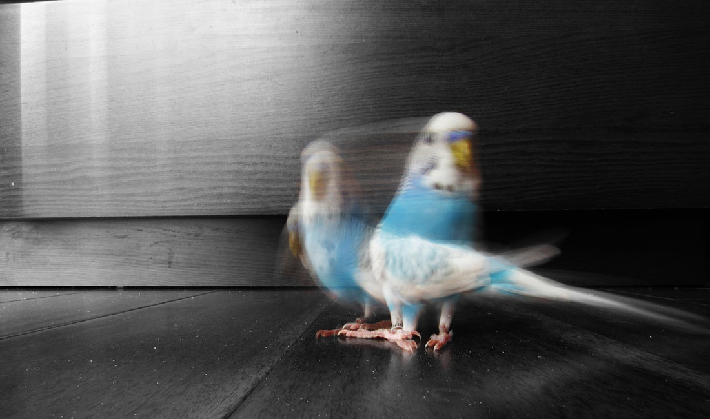
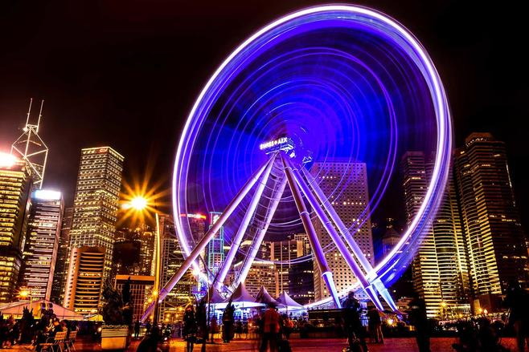
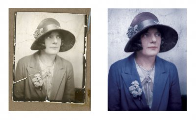
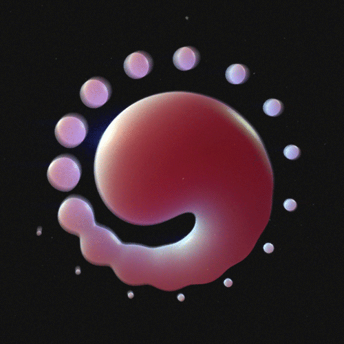

The Demon and The Diagram, Matthew Richie (2018)
I believe that a fluid relationship exists between the things
we interact with every day and our psyche:
the places we go, the people we meet, the emotions we face create
tangible stems of growth and curiosity in our brains.

Getty Images (2017)
As we grow and are impacted by a constant eb and flow of feelings,
we change our outlooks and the way we present ourselves.
Similarly, diagrammatic art is cultivated to explain circumstances
and spaces of change.
In diagramming, we have the potential to map both
living and lived experiences. With intersections between what
we've seen and what we're seeing, we're able to create
beautiful connections bridging stories and discoveries from far and wide.
C.S. Peirce's description of diagrams as "moving pictures of thought"
allows us to think of the medium as a map of multidimensional perspectives
from a single thing: be it a single lemon, the internet, or life itself.
A single thing can become millions of parts when broken down,
and each element can retain meaning.

Ambiguous Zones of a Lemon, (1963-88)
As the title suggests of the ink drawing above, ambiguity is nearlyunavoidable in a diagram. We constantly have to decipher and create
our own understandings of something that was constructed by
a separate being; so will we ever reach a "correct" interpretation?
Blonde woman magnifying glass held up to and enlarging one eye, (Corbis, (2019)
I guess that becomes the beauty in it.
With no concrete representation, diagrammatic art is
a mapping strategy to add new perspectives and engage curiosity.
To settle in a true relationship between art and art's meaning,
we must grip the fact that the appearance and understanding of something will
be rooted in the thought processes that are used to analyze it.
---
The Mechanisms of Meaning
Exercise II: How is Ayn Rand's philosophy relevant today?

Objectivism in Modern Space, (Kemp, 2019)
Ayn Rand discusses Objectivist ideas that bring up ideas of unchained individualism,
free will, and laissez faire capitalism.
Those with total individualism are thought of to build businesses, invent tech,
and create new ideas. Those successes are bound in happiness. Right
To contextualize this ideology, we are forced to recognize the power dynamics in
play that hold reign over our "individualism;"
Does everyone have equal weight in determining how they will contribute to the world,
or are there levels of power that must always be reckoned with in an age of media monopoly.
This illustration depicts the real winner in "Objectivism," the all-knowing, data-seeking
powers in capitalism that reap benefits without sowing new seeds.
May we live a truly rich and fulfilling existence dependent upon these powers,
or will seeking our greatest truths depend on their life support?
---
The Poor Image
Exercise III: What is the relationship of speed or velocity and digital images?
When Eadweard Muybridge first captured the moving image, he was experimenting with a
representation of real life. It was utterly fascinating; seeing something that could previously be
bottled by life itself, set in a space for everyone to replay.
Race Horse, Eadweard J. Muybridge (1878)
In Hito Steyerl's approach to movement and image, he understands the coorelation as poor.
Motion equates to blur, and blur is undesirable in collecting a clear image.
He believes that this poor image is significant for far more than itself;
it serves as a representation of reinterpretation, and abbreviation.
But, perhaps, could the speed and movement often represented in this image
be the closest documentations of real life?
While speed and timing are undoubtedly parts of photographing life and
processes, I believe that the "poor" image can actually be rich in value.
Where speed is the name of the game, there is a myriad of valuable
aspects to a blur in a photo - so many moments in question:
Where is the light headed, and where did it come from?

What about the speed and composition gives the image new meaning?

And outside of the blurry image, what about the reconstruction of
a digital image tells more of the story?

Instead of answering questions, I take to the images themselves to speak
a certain truth - the speed and depth of each image can be interpreted
differently by each viewer, but the image itself screams of raw value.
---
Cybernetics and Human Feedback
Exercise IV: What has been the cultural impact of cybernetics?
"Everything, from human brains to cities, and even entire societies,
could be seen as systems regulated and governed feedback."
All Watched Over by Machines of Loving Grace, (Curtis, 2013)
In understanding the role of cybernetics in culture, it was most logical for me to
understand the relationship between humans and machines. I looked closely at the
understanding the means by which order is given to explain a world that is continuously
spinning in the wake of entropy.
Most interestingly, the interconnectivity between human brains and machines through feedback
is supplemented by the idea of nature itself. The example of ecosystems is offered as a means
of understanding this "feedback;" but it seems to take away from the immense complexities
of human experiences: the unique and beautiful variability of struggles, hopes, and emotions.
By equating human functionality with that of machines,
dependent upon a strict set of feedback, we draw a very
thin line between human identities; if we are so similar
to machines, what makes us distinguishable in a world of chaos?
How might a scientific reality be possible, if reality
is inherently chaotic?
In creating a "machine like fantasy of stability," there is an inherent,
imaginative lens through which we force a gaze upon an entire race of people.
While it is a beautiful belief to encourage humans to see eachother as an
equal part of a global system, it is almost ignorant to gloss over the identity
by which we each attain an imperfectly beautiful life.
This thought aside, it is interesting to consider the fusion of the modern
idea of the ecosystem and computational perfection. In this case, computing mechanisms
were starting to be understood as the blossoms of a global culture. In creating
global models of conceptualizing massive programs allow individuals to transcend
politics and individual divisions to provide the conceptual framework for real solutions.
Though this seems like an innovative catalyst for change, herein lies the
abuse of vegetational concepts: as humans understand the potential of power
over others in a state of equilibrium, humans must come to face with the reality that
this dream scenario must become to an inevitable end.
The greed of those in power begin to use the power of nature as a political trick.
This conclusion brings up a natural question: Can we stop this cycle and prevent the inevitable?
Or must we abandon the idea of cybernetics as a troublesome paradox?
Foucault
Exercise V: Do you agree with Foucault that your own life is shaped through these systems of control??

The Prison of the Docile Citizen , (Kemp, 2019)
With Foucault's ideas of the citizen in relation to penile systems, he poses an important metaphor for systems of power that pervade our everyday life.
"See just like in the actual prison…where the goal of the operation is not some higher virtue like justice, but instead to reform prisoners into subjects that are useful for keeping society going…we, as occupants of our social prison, are constantly being disciplined and reformed into good employees, good consumers, good voters, good students, good friends.. all internalized expectations of ourselves given to us by someone in a position of power. We’re given standards by TV shows, movies, books, all media…standards we internalize that tell us how our bodies should look, what beauty is, what you should care about, what you can say and can’t say, what some people can do that you can’t do, there is no prison or method of torture that has ever been devised that can do to people what they willingly do to themselves in our modern social prison."
Episode 121 – Michel Foucault pt. 1 , Stephen West
---The First Space of Life
Poem by Tia Kemp

The first space of life that we experience is dark, yet warm.
We float unknowingly, yet comfortably, in the stomachs of our mothers -
feeding - heart beating - attached by umbilical cord.
We kick restlessly to make room as we grow, all the while nesting and
wrestling with the sounds of an outside world.
We grow comfort in this abyss - finding strength in a local society of
cells and tissue.
We gain a sense of proximity that is richer than language itself,
yet draws an emotion that begs to be called Love.
We breathe in for 7, hold for 8, and let out for 10 -
sending a tickle to our mother's side.
Nine months in a God-sculpted incubator of love, and we experience a shock.
Shock.
Our private society is exposed as light opens up to small slits in our eyes.
We experience the uncanny -
cut from our source of life and shocked into a state of being.
Upside down - blinded by blacks and whites -
we cry with no teeth and become overwhelmed by meanings and greetings.
Baby girls.
The quiet amber that warmed up our home now shrieks in a fight against noise.
Beeps. Coughs. Tears reddening our cheeks. We find no peace.
Sight still blurry, we begin to think.
We think of ourselves as small - microscopic - in an infrastructure of minds.
And before we can even speak, we begin to wonder -
Has the love in this space been exhausted?
Loudness drowns our breath - but we try in all our might to make sense of it.
We look up and see her face - the woman who made us - and
are shocked once more.
We feel, in that presence, that the theoretical is physical.
Her warmth is armor, and the words she speaks are familiar without
holding them to our tongues.
We listen - and hear peace. With that, we take on the world.
--- ---